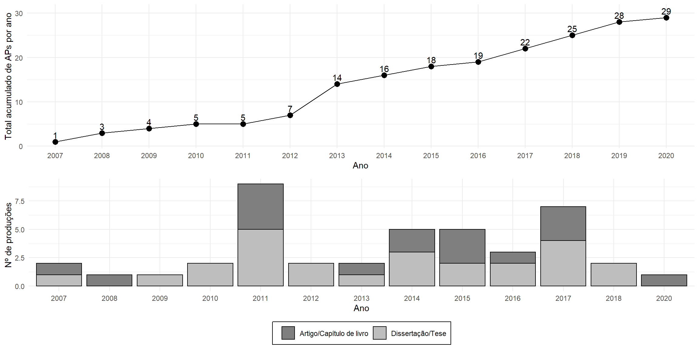

1 - Referenciais teóricos
2 - O que sabemos sobre as APs no STF: regras de funcionamento, padrão de participação e impacto sobre a decisão dos ministros
3 - Do que se sabe ao que se pode saber: deliberação, participação ou estratégia?

Deliberação e legitimidade do judicial review: podem as APs corrigir o déficit democrático do STF? (VESTENA, 2010; MARONA; ROCHA, 2014, GODOY, 2015; CARAZZA, 2016; SOMBRA, 2017; MARONA; ROCHA, 2017)
Comportamento judicial: por que os ministros convocam as APs? (GUIMARÃES, 2020; MARONA; ARAÚJO; MAGALHÃES, no prelo)
Regramento mínimo nas Leis e no RISTF
Institucionalização informal de algumas práticas reiteradas
Formato “adversarial” das apresentações
Regra do “não-debate”
Participação através de 1) Convite, 2) Indicação pelas partes ou terceiros admitidos no processo ou 3) Inscrição
Falta de transparência em relação aos critérios de envio de convites e (in)deferimento das inscrições
Adaptado da Tabela 2 de Leal et al (2017)
Adaptado do Gráfico 3 de Marona, Araújo e Magalhães (2020, no prelo)
Adaptado do Gráfico 1 de Guimarães (2020).
Critérios vagos: “sempre que entender necessário o esclarecimento de questões ou circunstâncias de fato, com repercussão geral e de interesse público relevante”
Justificativa oficial: 1) Natureza técnica; 2) Repercussão do tema; 3) Legitimidade democrática
Por que não houve uma AP para a ADI 3239 e a ADPF 153 (VESTENA, 2010)?
| Ano | Ações de controle concentrado distribuídas | APs realizadas | Taxa de Incidência |
|---|---|---|---|
| 2007 | 88 | 1 | 1.1364 % |
| 2008 | 114 | 2 | 1.7544 % |
| 2009 | 223 | 1 | 0.4484 % |
| 2010 | 155 | 1 | 0.6452 % |
| 2011 | 196 | 0 | 0 % |
| 2012 | 203 | 2 | 0.9852 % |
| 2013 | 223 | 7 | 3.139 % |
| 2014 | 131 | 2 | 1.5267 % |
Adaptado da Tabela 1 de Marona e Rocha (2017)
Adaptado do Gráfico 1 de Marona, Araújo e Magalhães (2020, no prelo)
Adaptado do Gráfico 4 de Leal et al (2017)
O impacto é, geralmente, medido a partir de citações de expositores das APs nos votos dos ministros
Baixa frequência de citações e concentração delas no voto do relator, também responsável pela convocação da AP
Utilização enviesada dos argumentos das APs, privilegiando aqueles que vão ao encontro da tese do ministro
As audiências públicas e a mídia (ANDRADE; MARONA; FERES, 2019)
As APs no STF e no Legislativo (RIBEIRO; SILVA; MARONA; 2019)
A estabilização/institucionalização informal de algumas práticas
O formato adversarial das exposições e a proibição do debate durante as AP
A falta de transparência na seleção dos expositores
O desequilíbrio na composição dos participantes da audiência e o enviesamento na direção do posicionamento futuro do relator do processo
A ausência de objetividade e uniformidade dos critérios para a convocação da AP
A baixa presença dos ministros durante a realização das AP, com exceção do relator ou do presidente responsável pela sua convocação
As poucas referências às exposições das AP nos votos dos ministros e a utilização dos argumentos lá apresentados apenas para reforçar a tese do julgador
As APs não parecem estar à altura do ideal deliberativo e participativo. Por que, então, elas são convocadas?
Hipóteses levantadas por Marona, Araújo e Magalhães (2020, no prelo)
1 - Aumentar as chances de vitória em processos controvertidos;
2 - Evitar represálias, quando o relator possui um posicionamento contrário ao de um ator com poder de retaliação;
3 - Ampliar o apoio difuso da corte